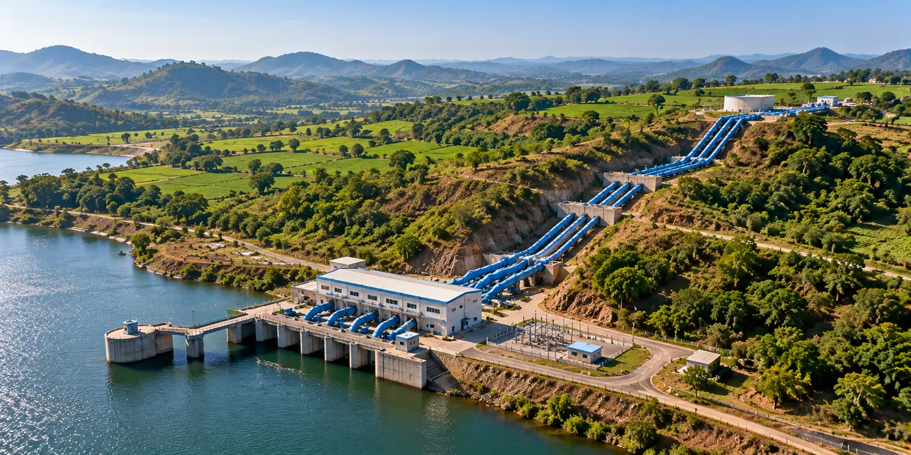

The Assignment
The Pench Irrigation Project required planning of Lift Irrigation Schemes to support command areas affected by upstream utilisation of Pench water at Chourai Dam in Madhya Pradesh.
The assignment involved preparation of Detailed Project Reports (DPRs) for seven Lift Irrigation Schemes, requiring engineering and water-resource planning to enable reliable irrigation across the affected command area.
Our Approach
CS TECH Ai provided consultancy services for preparation of DPRs for the seven proposed Lift Irrigation Schemes within the Pench Irrigation Project command.
The engagement included:
- Planning and formulation of 7 Lift Irrigation Schemes
- Assessment of available water resources and utilisation
- Engineering studies for the proposed irrigation systems
- Planning of water conveyance to the command areas
- Assessment of the proposed irrigation command
- Engineering design and scheme formulation
- Cost estimation and techno-economic assessment
- Preparation of Detailed Project Reports (DPRs)
The proposed schemes were planned for a Culturable Command Area (CCA) of approximately 28,922 hectares, with 121.62 Mm³ of water utilisation, supporting irrigation requirements across 106 villages.